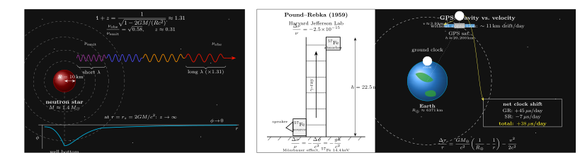

中子星表面出发的光, 为什么会变红?
上一节我们看到, 引力可以像透镜一样把光线弯曲, 远方星系的像被前景星系团拉成弧. 那是一个空间几何的问题, 光只是顺着弯曲时空里的测地线走. 这一节要问一个看似更"安静"但其实更深刻的问题: 如果光从引力场强的地方, 比如中子星表面, 出发, 一路爬到远离引力源的观察者手里, 它的频率会不会变?
答案是会. 而且在中子星这种极端情形里, 变得非常厉害 —— 波长能增加 31% 左右. 本来蓝色的一条谱线, 传到我们的 X 射线望远镜上, 会明显挪到更长的波长处. 这就是引力红移 (gravitational redshift). 它是广义相对论最朴素、最早被实验确认的三大经典预言之一 (另外两个是水星近日点进动与光线弯曲). 它的有趣之处在于: 我们不用去中子星, 只要在哈佛校园的一栋 22.5 米高的塔上, 或者在每天围着地球飞的 GPS 卫星上, 就可以把这件事量出来.
而隐藏在这个现象背后的, 是一个更惊人的结论 —— 时间在引力势井底部比在井外走得慢. 光的"变红", 不是光自身出了什么事, 而是发射它的那口钟, 比接收它的这口钟走得更慢罢了.
一、等效原理: 从加速电梯到引力势井
1907 年, 爱因斯坦还没能把广义相对论完整写下来, 但他已经想出了那个后来被他自己称为"一生中最幸福的念头". 这个念头就是等效原理: 一个在均匀引力场里静止的观察者, 和一个在没有引力的空间里被火箭加速着的观察者, 在一个足够小的局部, 做任何物理实验都分辨不出二者的区别.
用这个原理来推光的频率变化, 简直漂亮. 想象一间加速电梯, 以加速度 $g$ 往上加速. 电梯底部有一个光源, 以频率 $\nu$ 发出一道光, 射向电梯顶部的接收器, 两者距离 $h$. 光传过去需要的时间大约是 $t = h/c$. 这段时间内, 电梯顶部的接收器因为在加速, 已经获得了额外速度 $v = gt = gh/c$, 方向与光传播方向相同. 所以相对于光源来说, 接收器在"逃"—— 它看到的频率会被多普勒效应拉低:
$$ \frac{\Delta\nu}{\nu} = -\frac{v}{c} = -\frac{gh}{c^2}. \tag{1} $$
注意这个结果完全来自狭义相对论加上"电梯在加速"这个机械事实. 但爱因斯坦说, 既然加速电梯和引力场局部等价, 那么把电梯换成地球表面, 这个结果就该照样成立: 光从地面往高处传, 顶部观测者测到的频率比地面低. 也就是说, 光爬得越高, 频率越低, 波长越长, 越偏红.
如果换成更一般的引力势 $\phi$ (牛顿意义上的, 在弱场下有 $g = -\nabla\phi$), 这条公式的自然推广是:
$$ \frac{\Delta\nu}{\nu} = -\frac{\Delta\phi}{c^2}. \tag{2} $$
这里 $\Delta\phi = \phi_{\text{高处}} - \phi_{\text{低处}} \gt 0$, 所以 $\Delta\nu \lt 0$ —— 频率变低, 红移. 这是弱场的"牛顿极限"形式.
还有另一条更物理的推法, 叫"光子能量账本": 认为光子有等效质量 $m = h\nu/c^2$, 它爬到高处需要做功 $mg h = h\nu g h/c^2$, 这份功从光子自身的能量 $h\nu$ 中扣掉. 新能量 $h\nu' = h\nu(1 - gh/c^2)$, 于是 $\Delta\nu/\nu = -gh/c^2$, 和等效原理给出的结果完全一致. 这种推法虽然在严格意义上有点"半经典", 但它把"引力红移是一种能量代价"这件事说得很清楚.
二、Pound 与 Rebka: 22.5 米塔上测出的 10⁻¹⁵
公式 (1) 给出的数字非常小. 把 $g = 9.8\,\text{m/s}^2$, $h = 22.5\,\text{m}$, $c = 3\times 10^8\,\text{m/s}$ 代入:
$$ \frac{\Delta\nu}{\nu} \approx -\frac{9.8 \times 22.5}{(3\times 10^8)^2} \approx -2.5\times 10^{-15}. $$
这个数字小到什么程度? 如果你用一个走得"准到百万分之一"的普通原子钟, 完全看不到它. 你要求频率测量精度好到万亿分之一的千分之一. 1959 年之前, 这就是实验家们对引力红移望而却步的原因: 理论虽然优美, 但没人能真的在地面上量出来.
转机来自一个和相对论毫不相干的发现. 1958 年, 德国人 Rudolf Mössbauer 发现在固体晶格中, 某些 γ 射线的发射与吸收可以不涉及反冲 —— 反冲动量被整个晶体承担, 于是谱线变得异常尖锐, 线宽仅由原子核激发态寿命决定, 可以薄到 $\Delta\nu/\nu \sim 10^{-12}$ 甚至更窄. 这就给了人们一把前所未有的"频率尺子".
Robert Pound 和他的研究生 Glen Rebka 立刻意识到: 用 Mössbauer 效应做一个顶部和底部都带 ⁵⁷Fe 源 / 吸收体的垂直塔, 就可以测这个 $10^{-15}$ 级别的引力红移. 1959 年, 他们在哈佛的 Jefferson 物理实验室里搭了这样一个装置 —— 把一端的 γ 源装在扬声器锥盆上, 让它缓慢来回振动, 以可控的速度引入多普勒频移, 去"补偿"掉引力造成的失配, 然后看光子是否能被底部或顶部的吸收体共振吸收. 实验完成时, 他们测到 $\Delta\nu/\nu = -2.57\times 10^{-15}$, 与 GR 预言在 10% 的误差内一致. 几年后的精化版本把误差压到了 1% 以内.
这是人类第一次在地面实验室里直接验证广义相对论的红移预言. 它告诉我们: 让光子从实验室地板爬上扬声器纸盆的高度, 就足够让它"累"得损失一点能量. 引力红移不是天文现象的专利, 它就在我们脚下.

三、强场: Schwarzschild 度规与中子星的 0.31
弱场公式 (2) 只在 $|\phi/c^2| \ll 1$ 时成立. 当我们真去一个致密天体的表面, 比如中子星, 这个条件就不再满足, 必须回到广义相对论的严格解.
1916 年, Karl Schwarzschild 给出了爱因斯坦场方程的第一个精确解 —— 球对称真空中的时空度规. 在原点有一个质量 $M$ 的天体, 外部度规写成:
$$ ds^2 = -\left(1 - \frac{2GM}{rc^2}\right) c^2\,dt^2 + \left(1 - \frac{2GM}{rc^2}\right)^{-1} dr^2 + r^2 d\Omega^2. $$
对一个在半径 $r$ 处静止不动 (意思是 $dr = d\Omega = 0$) 的观察者, 他手上的标准钟读出的固有时间 $d\tau$ 与坐标时 $dt$ 的关系是
$$ d\tau = \sqrt{1 - \frac{2GM}{rc^2}}\, dt. $$
注意 $dt$ 对所有地方都是同一个"坐标时", 但 $d\tau$ 是本地钟走的. 半径 $r$ 越小, 括号里越小, 本地钟走得越慢. 用它算引力红移, 结果是: 发射端与接收端的固有频率之比等于两处 $\sqrt{1-2GM/(rc^2)}$ 的比值 (这里用发射端的频率是本地测的, 接收端频率也是本地测的, 坐标时对两端是同一种, 所以直接约去).
对从半径 $R$ 发出、到无穷远被接收的光, 观察者接收的频率 $\nu_{\text{obs}}$ 与发射时的本征频率 $\nu_{\text{emit}}$ 之比是:
$$ \frac{\nu_{\text{obs}}}{\nu_{\text{emit}}} = \sqrt{1 - \frac{2GM}{Rc^2}}, \qquad 1 + z = \frac{1}{\sqrt{1 - 2GM/(Rc^2)}}. \tag{3} $$
现在把一颗典型中子星的参数代进去: 质量 $M = 1.4\,M_\odot = 1.4 \times 1.989 \times 10^{30}\,\text{kg} = 2.78\times 10^{30}\,\text{kg}$, 半径 $R = 10\,\text{km} = 10^4\,\text{m}$. 算那个无量纲组合:
$$ \frac{2GM}{Rc^2} = \frac{2\times 6.674\times 10^{-11}\times 2.78\times 10^{30}}{10^4 \times (3\times 10^8)^2} \approx 0.412. $$
代入 (3), $1+z = 1/\sqrt{1-0.412} = 1/\sqrt{0.588} \approx 1/0.767 \approx 1.304$. 也就是 $z \approx 0.30$. 这个数字的物理含义是: 从中子星表面发出的一条 1.0 nm 的 X 射线吸收线, 传到我们的探测器上会出现在 1.30 nm 附近, 整整挪了 30%. 不是 $10^{-15}$, 不是 $10^{-9}$, 而是 $10^{-1}$.
这并不只是纸面上的数字. Cottam, Paerels 和 Mendez 在 2002 年用 XMM-Newton X 射线望远镜对 EXO 0748−676 这颗 X 射线暴源做光谱观测, 就在它的表面谱中辨认出了从原子吸收线 (据认定为高度电离的铁与氧) 产生的红移特征, 测到 $z \approx 0.35$, 和厚厚一层中子简并物质之上的强场预言非常一致. 也就是说, 我们事实上看到了一颗星的"频率井"有多深.
四、极限、白矮星、GPS 与日常意义
一旦有了严格的公式 (3), 就可以一口气看到它的两端.
极限一 (弱场恢复): 白矮星. 典型白矮星 $M \approx M_\odot$, $R \approx 7\,000\,\text{km}$. 算 $2GM/(Rc^2) \approx 2\times 6.67\times 10^{-11} \times 2\times 10^{30}/(7\times 10^6 \times 9\times 10^{16}) \approx 4.2\times 10^{-4}$. 展开公式 (3) 得 $z \approx GM/(Rc^2) \approx 2\times 10^{-4}$. 天狼星 B 等白矮星的光谱红移确实就在这个量级. 它告诉我们两件事: (a) 弱场近似和强场严格解在 $2GM/(Rc^2) \ll 1$ 时漂亮地衔接; (b) 只要你有一个普通致密天体, 引力红移就已经变成一个能在天文台测到的效应 —— 不必等到中子星那么极端.
极限二 (强场发散): 黑洞视界. 当半径逼近 Schwarzschild 半径 $r_s = 2GM/c^2$, (3) 式分母里的根号趋于零, $z \to \infty$. 意思是: 一束从视界附近发出的光, 到达远处观察者手里时, 频率被压到零, 波长被拉到无穷大 —— 能量全部用于"爬坡", 再也爬不到外面来. 这正是黑洞视界的物理定义: 它不是一堵"光被吸回去"的墙, 而是一个"光的频率被红移到零"的面. 把一个发着蓝色激光的探测器向黑洞下沉, 远处的你会看到激光变蓝变红变暗变暗变暗, 直到彻底看不见 —— 可探测器自己并没有感觉到什么不一样, 它头顶的天空也只是颜色被蓝移而已. 这是引力红移的终极舞台.
日常意义: GPS. 引力红移听起来是天文学家的专属玩具, 但事实上, 它就在我们每个人的手机里工作. GPS 卫星轨道高度约 20,200 km, 所以它们处在比地面更浅的引力势井中, 时钟走得比地面快. 由广义相对论 (引力红移): 卫星钟每天快约 +45 微秒; 由狭义相对论 (卫星绕地速度约 3.9 km/s): 卫星钟每天慢约 -7 微秒. 净效应是卫星钟每天比地面钟快约 38 微秒. 这听起来微不足道, 但光在 38 微秒里跑 $3\times 10^8 \times 38\times 10^{-6} = 1.14\times 10^{4}$ 米, 也就是 11 公里. 如果不校正, GPS 定位一天之内就会偏差十几公里, 彻底失效. 系统设计者的办法是: 在卫星上线前, 先把原子钟的频率人为调低 (地面调到 10.22999999543 MHz, 而不是标称的 10.23 MHz), 让它装上火箭升空后, 因引力红移恢复到标称值. 这是一件每一次你打开地图、找餐厅、叫出租车时, 默默在背后发生的事. 换句话说, 爱因斯坦 1907 年在专利局里想到的那个等效原理, 现在已经每秒都在我们的口袋里生效.
历史上这条路径被一步步走出来: 1907 年爱因斯坦提出等效原理与"光在引力场中受影响"的概念; 1916 年 Schwarzschild 给出严格解; 1959 年 Pound-Rebka 测到 $10^{-15}$; 1976 年 Vessot 和 Levine 的 Gravity Probe A 把一个氢脉泽原子钟发射到 10,000 km 高空再回来, 把引力红移测准到了 $10^{-4}$, 精度比 Pound-Rebka 高了整整四个数量级; 2018 年后 MICROSCOPE、ACES 等项目继续把这条不等式刷到 $10^{-6}$ 水平. 每一次精度提升, 都是在问: 爱因斯坦那条又朴素又大胆的等效原理, 是不是连到这个量级都挡不住?
小结
引力红移让我们看清楚了光的一个新身份: 它不仅是电磁波, 不仅在被介质折射、被黑洞偏折; 它还是一只"时钟"—— 它的频率是一把可以跨越宇宙尺度比较时间流逝快慢的尺子. 在"光是什么"这个长长的追问中, 这一节把光推到了更深一层: 光的频率变红, 不是光自己变老, 而是发它的地方时间过得慢. 下一节我们会沿着这条线索继续走, 去看宇宙微波背景的那些第一峰第二峰第三峰; 那里, 光不仅告诉我们一个源点的势井多深, 还带着整个早期宇宙被压缩与振荡的声纹, 一路传到今天.
▲